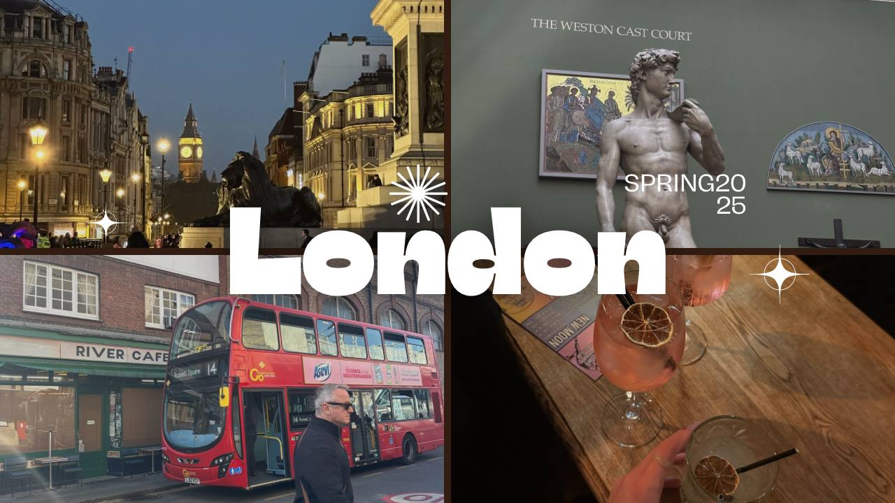

Talla sivustolla kerron, siita mita tykkan tehda vapaa-ajalla. Olen kiinnostunut monista asioista, kuten taiteesta, urheilusta ja matkustamisesta.
Viimeisin matkani oli Lontooseen, jossa kävin monilla nähtävyyksillä ja nautin kaupungin kulttuurista. Lontoo on upea kaupunki, jossa on paljon nähtävää ja koettavaa.
Olen Sofiya Sakhchinskaya, 21-vuotias opiskelija Laurea-ammattikorkeakoulussa. Opiskelen liiketoimintaa ja erityisesti web-sovellusten kehittämistä. Tavoitteenani on oppia lisää ohjelmoinnista ja kehittää taitojani alalla.
Vapaa-ajallani tykkään viettää aikaa ystävieni kanssa, käydä elokuvissa ja matkustaa. Nautin myös valokuvauksesta ja taiteesta. Tykkään kokeilla uusia asioita ja oppia uutta.
Tykkään aktiivisesta elamanrytmista ja nautin uusista haasteista. Olen kiinnostunut oppimaan uusia taitoja ja kehittämään itseäni jatkuvasti. Innostun todella paljon reissailusta, viimeisin matka on ollut Lontoon. Kuva matkalta:
My contact:
| NIMI | SAHKOPOSTI |
|---|---|
| Sofiya | sos00065@laurea.fi |